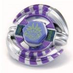

Capricorne 100HF
| Capricorne 100HF (Hole Flat) | |
|  | |
| Number: | BB-27 |
|---|---|
| System: | Metal System |
| Type: | Attack |
Contents
Note: Capricorne 100HF is the last of the Metal System releases in Metal Fight Beyblade.
Face: Capricorne
The Face illustrates Capricorn, the tenth astrological sign in the Zodiac. This Seagoat is depicted as having six horns. Hasbro's version of the Face mark in its Fury Capricorn release omits the word "CAPRICORNE" on the banner at the bottom of this animal.
Wheel: Capricorne
- Weight: 32.5 grams
Capricorne's design has two main elements related to a goat: at two opposite ends, there are some hooves with two toes each, and on the right of those start one set of two long, curved horns each. To avoid breaking issues, flat metal connects both horns at their end, but also with the side of the hoof. These precautions and the design create an overall very circular shape with some very simple slopes.
In theory, the roundness of this Wheel could make it a good Stamina or Defense type, and the slopes could provide potential Upper Attack, however Capricorne simply lacks all the weight necessary for those properties and its design has no acute points. Also, as is often the case with Wheels, the slopes are not really in the proper direction since Capricorne is only right-spin, and the hooves were oddly placed right at the base of the only good slopes in that spin direction, so they act like boulders. This average, too smooth transition in the relief of this Wheel has rendered it useless since its release, especially with the arrival of the much anticipated Hybrid Wheel System right the following month in Japan.
Track: 100
- Weight: 1.0 grams
This track is currently the third lowest track available, but is outclassed in terms of Attack and Stamina by the 85 and 90 Tracks. 100 usually has no problem with floor scrapes, and while it is generally an outclassed part, is still competitively viable, particularly in Attack customizations where it is able to make good contact with most opposing Beyblades.
Use in Stamina Customization
If 85 or 90 are not available, 100 can be put to use in the custom Earth Bull 100WD.
Use in Attack Customization
If 85 and 90 are not available, 100 can be put to good use in the combo MF Lightning L Drago 100LRF.
Use in Defense Customization
If 85 or 90 are not available, 100 can be put to use in the custom MF-H Basalt Kerbecs 100RS.
Bottom: Hole Flat
| Weight: | 0.5 gram | Full Width: | 15.95 mm | Tip Width: | 4.01 mm | Hole Diameter: | 2.27 mm | Full Height: | 8.96 mm | Tip Height: | 6.02 mm |
HF has a very similar movement speed to that of F, with the main difference being a slight Stamina improvement due to the hole in the middle of the tip. However, this comes with the detriment of even less grip to the stadium floor than F, as well as increased fragility.
Gallery
-
Capricorne Face
-
Capricorne Wheel (Top)
-
Capricorne Wheel (Bottom)
-
Capricorne Wheel
-
Capricorne Wheel
-
100 Track
-
Hole Flat
Overall
Capricorne 100HF is one of the worst sellers of the Metal System, and for good reasons: its Wheel has no use in any field, 100 is simply decent for some Attack types, and its Bottom was quickly outclassed. As such, there is no reason to buy this Beyblade outside of collection purposes.